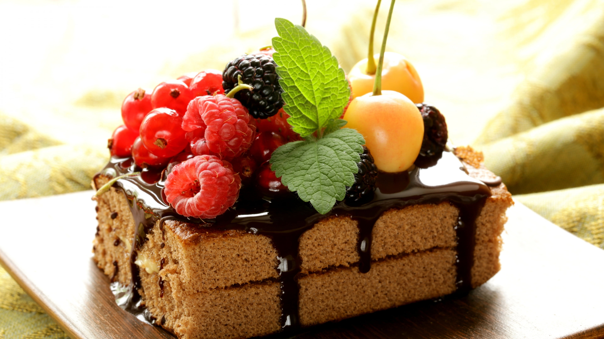
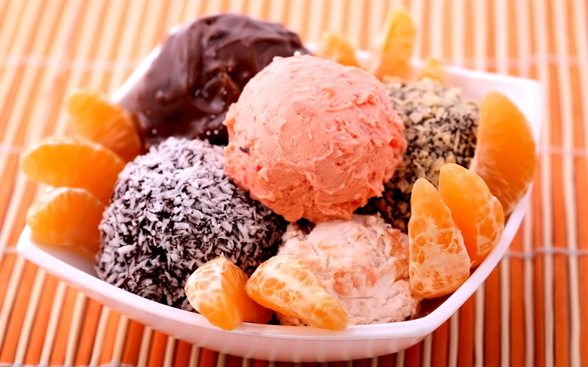
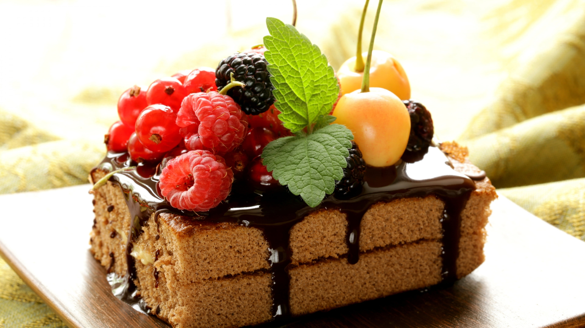
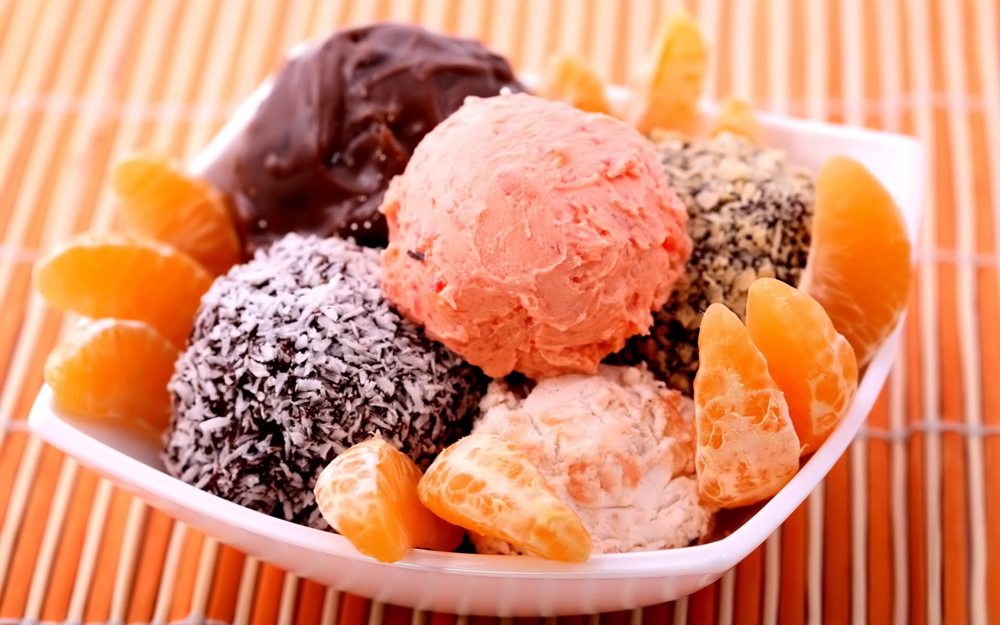

CONFITERIA COCONUT
Ofrece alimentos que son bunas para la salud utilizando azucares naturales de las frutas con frutos secos, miel y otros
| BEBIDAS |  PASTELILLOS |  HELADOS |
|---|
Ofrece alimentos que son bunas para la salud utilizando azucares naturales de las frutas con frutos secos, miel y otros
| BEBIDAS |  PASTELILLOS |  HELADOS |
|---|